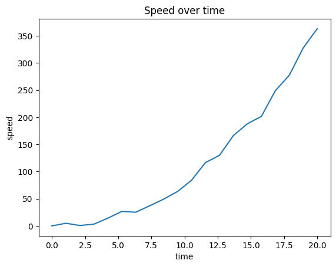
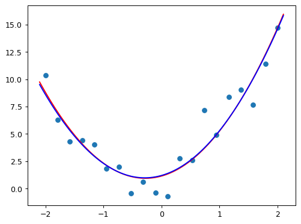

import matplotlib
import matplotlib.pyplot as plt
import numpy as np
import torchdef q(a,b,c,x): return a*x**2 + b*x + cfrom functools import partialdef plot_function(f):
x = np.linspace(-10, 10, 50)
y = f(x)
plt.plot(x, y)time = torch.tensor(np.linspace(0, 20, 20))
f = partial(q, 1, -2, 0)
y = f(time)
noise = 5 * torch.randn((len(time),))
speed = (noise + y).max(torch.tensor(0.0))
speed[0] = 0.0fig, ax = plt.subplots()
line, = ax.plot(time, speed)
ax.set_xlabel('time')
ax.set_ylabel('speed')
ax.set_title('Speed over time')Text(0.5, 1.0, 'Speed over time')
plt.rc('figure', dpi=90)
def plot_function(f, title=None, min=-2.1, max=2.1, color='r', ylim=None):
x = torch.linspace(min,max, 100)[:,None]
if ylim: plt.ylim(ylim)
plt.plot(x, f(x), color)
if title is not None: plt.title(title)def noise(x, scale): return np.random.normal(scale=scale, size=x.shape)
def add_noise(x, mult, add): return x * (1+noise(x,mult)) + noise(x,add)def f(x): return 3*x**2 + 2*x + 1
x = torch.linspace(-2, 2, steps=20)[:,None]
y = add_noise(f(x), 0.15, 1.5)from ipywidgets import *@interact(a=1.1, b=1.1, c=1.1)
def plot_quad(a, b, c):
plt.scatter(x,y)
plot_function(partial(q, a,b,c), ylim=(-3,13))def mse(pred, labels, item=True):
se = ((pred - labels)**2).mean()
return se.item() if item else sef = partial(q, 1, 1, 1)
sqe = (f(x) - y)**2((f(x)-y)**2).mean()tensor(13.6295, dtype=torch.float64)@interact(a=1.1, b=1.1, c=1.1)
def plot_quad(a, b, c):
plt.scatter(x,y)
f = partial(q, a,b,c)
plot_function(f, ylim=(-3,13), title=mse(f(x), y))# weights = torch.randn(3).requires_grad_()
weights = torch.tensor([2.6, 1.5, 1.2]).requires_grad_()
def f(w, x): return x**2*w[0] + x*w[1] + w[2]f(weights, 5)tensor(78.5000, grad_fn=<AddBackward0>)for i in range(1000):
preds = f(weights, x)
loss = mse(preds, y, item=False)
loss.backward()
with torch.no_grad():
weights -= 0.0001 * weights.grad
weights.grad = None
if i % 100 == 0:
print(i, loss.item())0 1.9257010423639997
100 1.9257007564709832
200 1.9257003216835447
300 1.9256999705553355
400 1.9256991464339133
500 1.9256988260907906
600 1.9256983210555796
700 1.925698083525107
800 1.9256977687568035
900 1.925697447561204with torch.no_grad():
plt.scatter(x, y)
plot_function(partial(q, *list(weights)))
plot_function(partial(q, 2.6, 1.5, 1.2), color='b')
print(weights)tensor([2.6524, 1.4740, 1.1451], requires_grad=True)